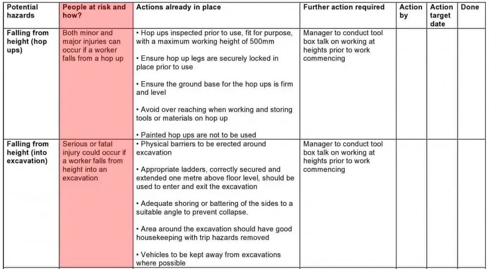
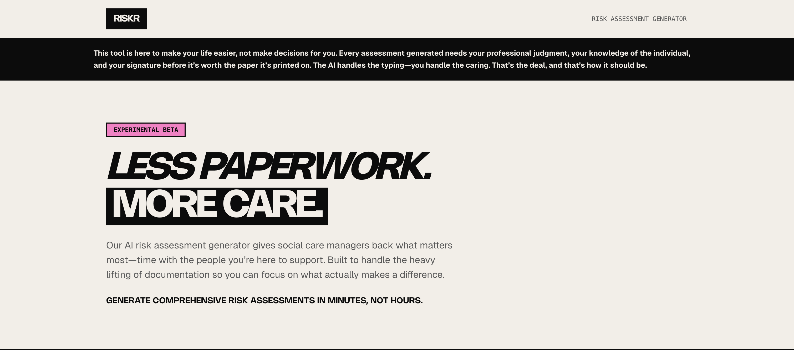

Riskr
Risk assessment tool for social care, designed and used in my own practice
Context
Risk assessments are one of the most repeated pieces of documentation in social care. Every service user needs one, most of the same risk categories recur across cases, and managers end up rewriting large portions of the same structure from scratch each time. The problem wasn't a lack of clarity on what good coverage looked like, it was the time cost of producing it properly, again and again, on top of everything else on a manager's plate.

What I noticed
Using early AI tools myself for this kind of writing, two things stood out. First, most existing risk software carries a clinical, alarmist visual tone, dense forms, red flags everywhere, which matched the seriousness of the content but made an already heavy task feel heavier to sit down and do. Second, this was one of the earliest points where AI was entering day-to-day social care practice directly, and almost nobody using it had been given any guidance on what not to put into a prompt. Names, addresses, and specific incident details were going into tools with no real conversation about where that data went.
The design response
Drafting from structure, not a blank page. Riskr generates a first draft from structured input rather than free text, covering the recurring risk categories a manager would otherwise write out manually each time. Their time goes into reviewing and adjusting judgement calls, not producing boilerplate.

A visual tone built for the job, not the category. I moved deliberately away from the clinical, alarmist default. Care managers' days are already grim and grey enough without the software matching that tone, so I built Riskr with a colourful, warm interface, kept fully accessible, on the belief that a small tool still has room to bring in some genuine lightness rather than adding to the weight.
Guardrails built in from day one. Riskr was introducing social care to what AI could realistically do, and I didn't think that introduction was complete without also being upfront about what to be careful of this early. I built disclaimer banners directly into the interface, reminding managers not to input identifiable details, so the tool could be genuinely useful without quietly normalising a habit that would cause a real data protection problem later.

Where it stands
Designed and used in my own practice as a manager, cutting down the time spent producing and revising risk documentation for services I was directly responsible for, across thousands of assessments over time.